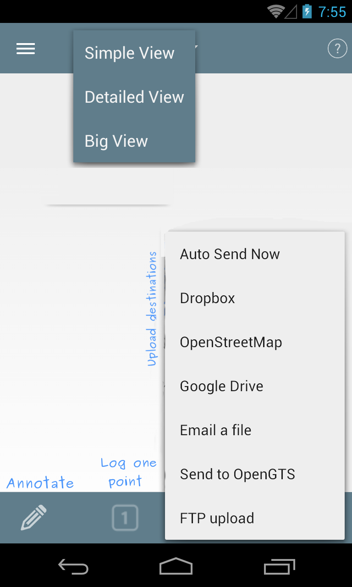
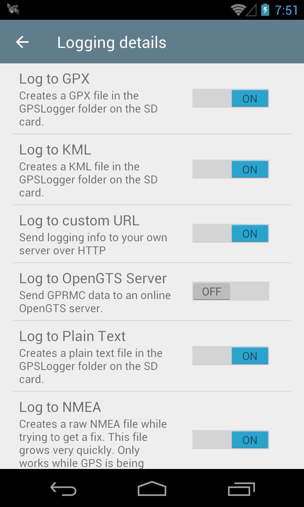
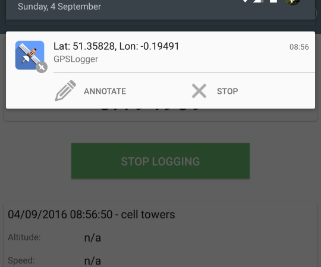

Quick Tour
Menus and Icons

Use the views dropdown to navigate between the different presentations.
While you are logging, the green indicator will stay on.
The spinner only appears when the GPS is trying to get a fix.
Features
Can log to GPX, KML, CSV, NMEA and CSV formats. Can also log to a custom URL or just the screen.
Logs GPX points as tracks and track segments
Also logs speed, direction and altitude if available
Add a description to a point using the annotate menu, gets added as a waypoint
Configure time intervals between points
Configure a minimum distance filter between points or an accuracy filter
Notification icon with coordinates and quick actions
Uses cell towers for location when GPS is disabled
Selectively choose network, gps and passive location providers
Automatically upload or email the file at set intervals to destinations such as Email, FTP, Dropbox, Google Docs, OpenStreetMap.
Share location or log files via SMS/Email (and other apps such as Facebook or Twitter depending on what you've got installed)
Start logging on phone bootup
Invoke operations from Tasker or other automation apps.
You can give it a preset file with your own values for distribution
Multiple profiles with different settings are possible
Logging details

I've changed the settings, but it's still showing/using the old settings
If the app is logging, and you make changes to the settings, the changes will take effect after the next point is logged. This means that if you've set your interval as 1 hour, you have a long wait ahead of you. If you want the changes to take effect immediately, then stop logging and start it again so that the changes are refreshed.
Why can't I remove the notification?

As of newer versions of Android, removing the notification will cause the service to be killed. As a result, the notification now needs to stay there. You may have seen a recent increase in the number of apps that need to sit in the notification bar for the same reason - to perform background services without being killed.
There is an option in the app's settings that allows you to remove the notification buttons if you want a smaller notification.